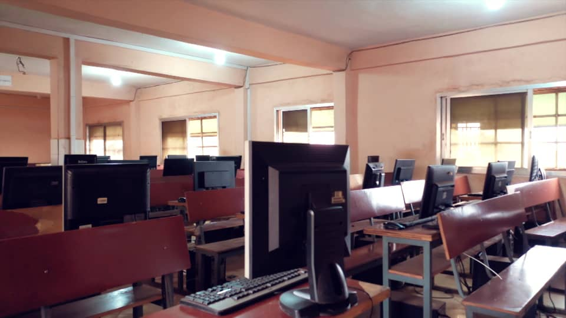
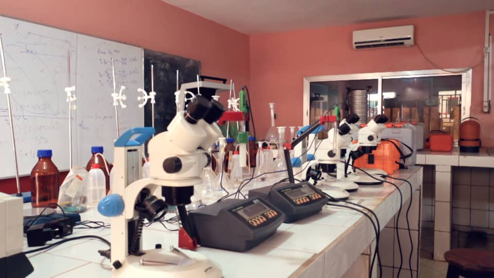
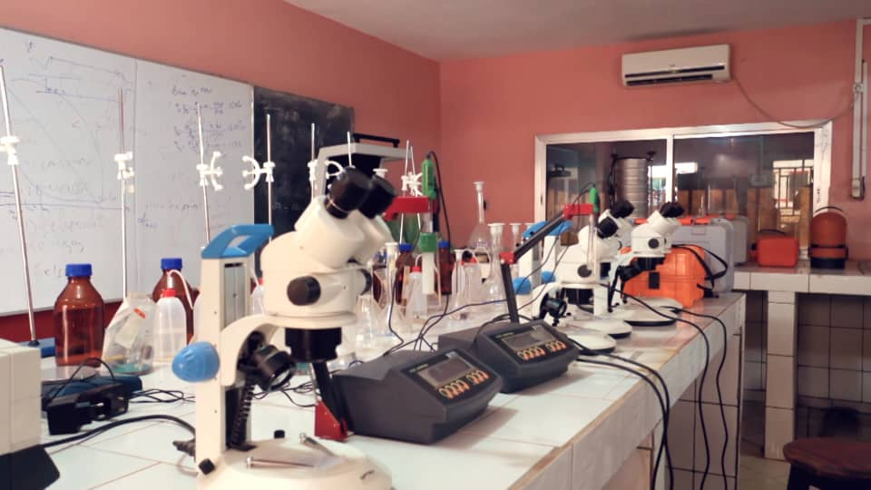
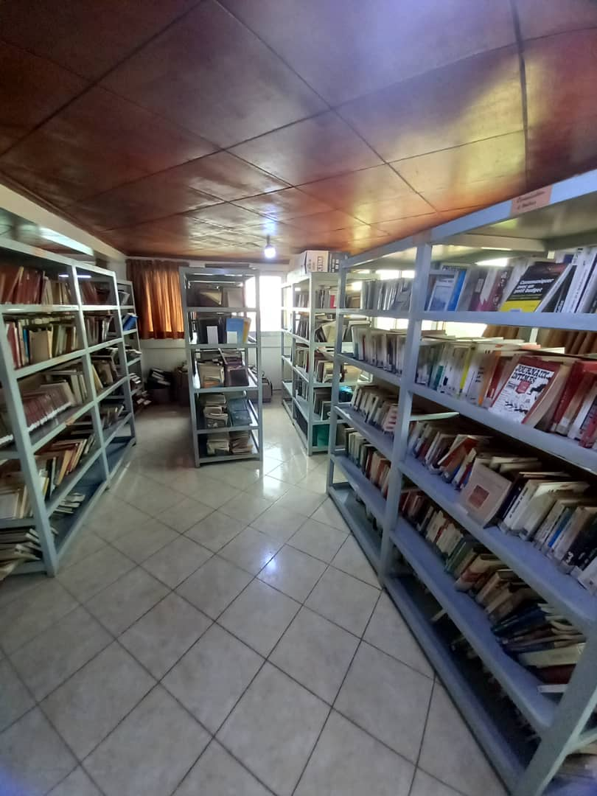
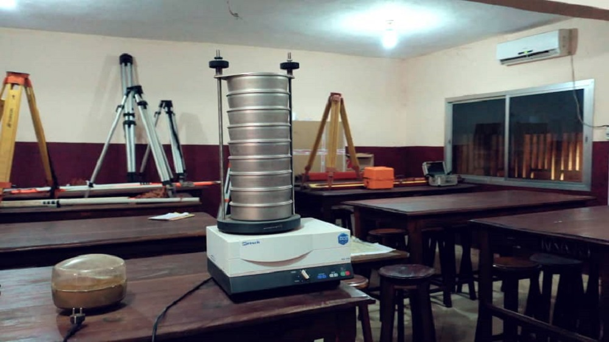
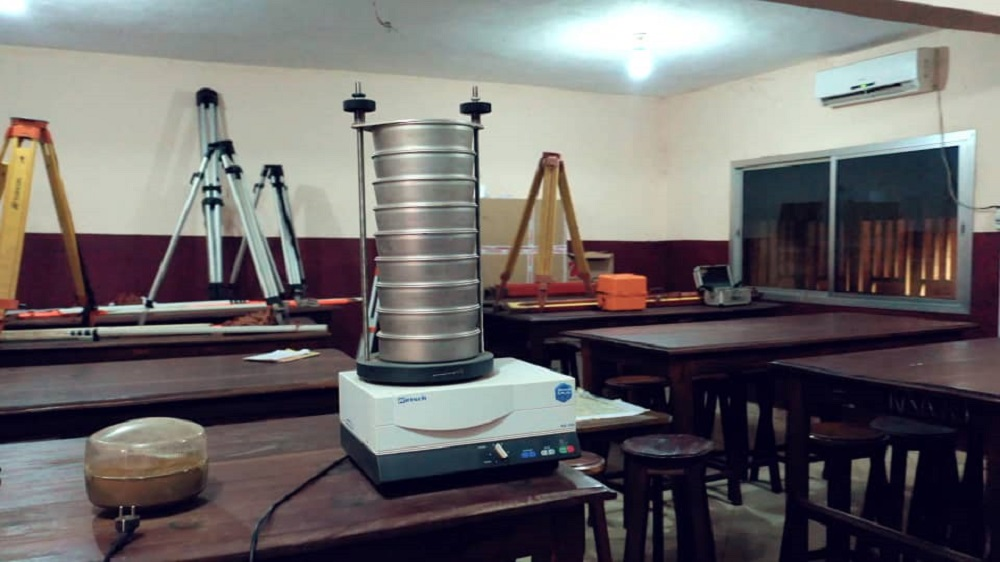

I-CREATION ET AUTORISATION D'OUVERTURE DE L'INSTITUT DE FORMATION TECHNIQUE ET PROFESSIONNELLE DE SONFONIA
Création
Crée par arrêté N°2010/6615/METFP/CAB/DNETPP du 26 Novembre 2010, l'IFPTS est un Etablissement d'Enseignement Technique et Professionnel Privé à caractère pédagogique placé sous la tutuelle du Ministère de l'Enseignement Techniqueet de la Formation Professionnelle, de l'Emploi et du Travail.II-DES INFRASTRUCTURES
L'institut de Formation Professionnel et de Technique de Sonfonia est un complexe composant (10) Salles de classeSalle Informatique
III-PEDAGOGIE
La structure académique est décentralisée comme suit:-Le Directeur des Etudes.
Il assure la mise en oeuvre des dispositions pédagogiques éditées par le Ministère de l'Enseignement Technique de la Formation Professionnelle.
Chefs de Filières.
Ils asurent les programmes de Formation dans lzs filières ci-après:
1-Ecole de la Santé
Niveau de recrutement:Brevet, Terminale, Bac ou autres diplômes équivalents.Diplôme Obtenu: BEP, BTS durée 3ans.
Les Filières
Techniciens de santé communautaireInfirmier d'Etat
Sage Femme
Laboratoire
 
 2-Sciences Techniques
Niveau de recrutement: Terminale, Bac, ou autres diplômes équivalents.Diplôme Obtenu: BTS durée 3ans.
Les Filières:
Architecture-TopographieElectricité Bâtiment
Electricité Industrielle
Economie Minier
Operateur Minier
Télécommunication
3-Tertiaire
Niveau de recrutement: Terminale, Bac ou autres diplômes equivalents.Diplôme obtenu: BTS durée 3ans.
Les Filières:
Banque et AssuranceFinances Comptabilité
Gestion Informatique
Comptabilité et Gestion
Douanes et Transit
Transport et Logistique
Tourisme et Hôtellerie
V-BIBLIOTHEQUES
Une Bibliothèque livresque avec plus de 15000 ouvrage.Une Bibliothèque virtuelle avec plus de 800 cours téléchargés et (5) sites de téléchargeùent gratuits.

Bibliothèque livresque
Ces Bibliothèques dotées d'ouvrages scientifiques adaptés aux programmes de formration sont ouverte sur le campus de 08h 00 à 18h 00 pour les Etudiants et Encadreurs.
Etre titulaire du BEPC ou niveau 12ème année Durée 3ans .
Pour le cycle BTS (Brevet de Technicien superieur).
Etre titulaire du Baccalauréat unique ou niveau Terminal Durée 3ans 
A l'institut de Formation Professionnelle et Technique de Sonfonia, le savoir faire fait la difference.
VI- CONDITIONS D'ACCES
Pour le cycle BEP (Brevet Elementaire professionnel).Etre titulaire du BEPC ou niveau 12ème année Durée 3ans .
Pour le cycle BTS (Brevet de Technicien superieur).
Etre titulaire du Baccalauréat unique ou niveau Terminal Durée 3ans 
A l'institut de Formation Professionnelle et Technique de Sonfonia, le savoir faire fait la difference.